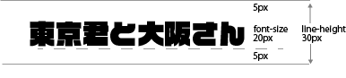

CSS line-height プロパティ - css
category:css
行間を設定するプロパティです。
目次
line-height
CSS の line-height プロパティは、テキストのような行で使われる空間の量を設定します。ブロックレベル要素では、要素に含まれる行ボックスの最小の高さを指定します。非置換インライン要素では、行ボックスの高さの計算に使われる高さを指定します。

値
normal
ユーザーエージェントに依存します。デスクトップブラウザー (Firefox を含む) は 要素の font-family によって決まる、おおよそ 1.2 という既定値を使います。。
「number」（単位なし）
使用値は、この単位のない 「number」 に要素のフォントサイズを掛けたものになります。計算値は、指定された 「number」 と同じです。ほとんどの場合、継承時の予期しない結果を避けるために、これが line-height を設定する好ましい方法です。
length
行ボックスの高さの計算に、指定した 「length」 が使われます。emやpx単位を指定しての行間設定になります。
行間が指定された親要素が子孫要素の文字サイズにかかわらず単位指定された高さに固定されます。回避するには要素それぞれに行間を指定するか単位なしの行間指定をします。
percentage
要素自身のフォントサイズに対する相対値です。計算値はこの 「percentage」 に要素のフォントサイズの計算値を掛けたものです。パーセント値は予期しない結果を生む可能性があります (下記の2つの例を参照してください)。
記述例
line-height の値は単位なしの数値が好ましい
以下の例は、line-height の値として [length] より [number] のほうが好ましい理由を示しています。 2 つの <div> 要素を使用しています。最初のものは緑色の境界を持っており、単位なしの line-height の値を使用しています。二番目は赤色の境界を持っており、 line-height の値を em で定義して使用しています。
css
/* */
.green {
line-height: 1.1;
border: solid limegreen;
}
.red {
line-height: 1.1em;
border: solid red;
}
h1 {
font-size: 30px;
}
.box {
width: 18em;
display: inline-block;
vertical-align: top;
font-size: 15px;
}
1.1の行間を要素の文字サイズにあわせた行間に設定しない仕様
HTML
<div class="box green">
<h1>予期しない結果を避けるために、単位なしの line-height を使いましょう。</h1>
length と percentage で line-height を指定すると、継承動作がうまくいきません。 ...
</div>
<div class="box red">
<h1>予期しない結果を避けるために、単位なしの line-height を使いましょう。</h1>
length と percentage で line-height を指定すると、継承動作がうまくいきません。 ...
</div>
<!-- 1 つ目の <h1> の line-height はそれ自身のフォントサイズから計算されます (30px × 1.1) = 33px -->
<!-- 2 つ目の <h1> の line-height は red div のフォントサイズから計算されます (15px × 1.1) = 16.5px おそらく、望む結果ではないでしょう -->